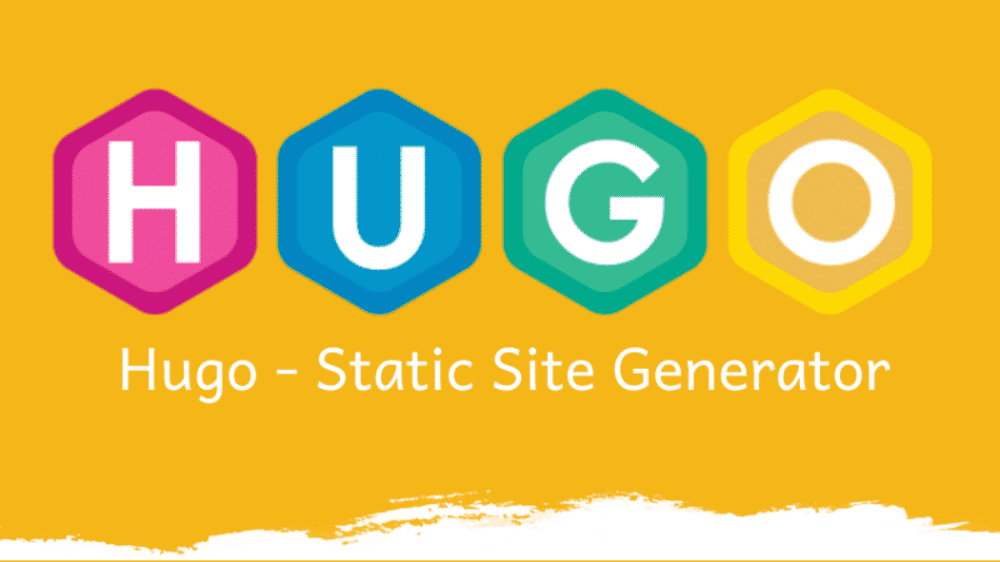

Sinceramente esta sección solo existe para darte la bienvenida y poco mas, sobretodo para avisarte que no vas a ver la mejor pagina del mundo, aunque esta hecha con mucho esfuerzo, sudor y lagrimas.
Mas adelante me presentare de manera mas cordial para que empatices mas conmigo y no te parezca tan floja mi plantilla.
¡Espero que te guste y la disfrutes!
HUGO
Primero vamos a hacer un tutorial de como instalar y empezar a usar este cacharro.
Primer Paso
Empezamos primero con la instalación, en mi caso para windows como bien yo hice:
Aunque tienes instaladores para mac, linux y windows en este enlace:
No olvides, si se necesita, configurar el path del sistema para acceder desde cualquier invocación
Gestionamos todo desde un terminal independientemente de usar linux o windows
Verifica la versión instalada

¿Que tal? De momento facil, pues ahora se viene lo bueno…
Paso 2
Al contrario de linux, windows es un cacao mental para la instalacion de Hugo.
La unica manera que encontramos mis compañeros y yo fue este video de YouTube de un Indio hablando en ingles.
Aqui os lo dejo y seguis el tutorial como hicimos nosotros:
¡Con esto solucionaras todas tus dudas!
Sobre mi
Un chico de pueblo
Me llamo Jorge Tejel Catalán, soy de un pequeño pueblo a unos 60km de Zaragoza llamado Sástago. Nacido el 5 de septiembre de 2001 soy un apasionado del futbol sala y del marketing.
Soy Técnico Superior en Marketing y Publicidad desde el 2020, titulado y diplomado en el Colegio Montessori(Zaragoza).
Aunque este estudiando Desarrollo y Aplicacion web solo se apenas unas cuantas nociones basicas de informatica ya que soy bastante tarugo con los ordenadores, pero me esfuerzo mucho y nunca me rindo.